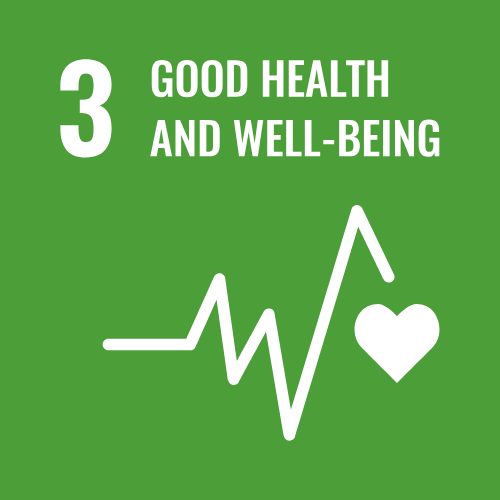
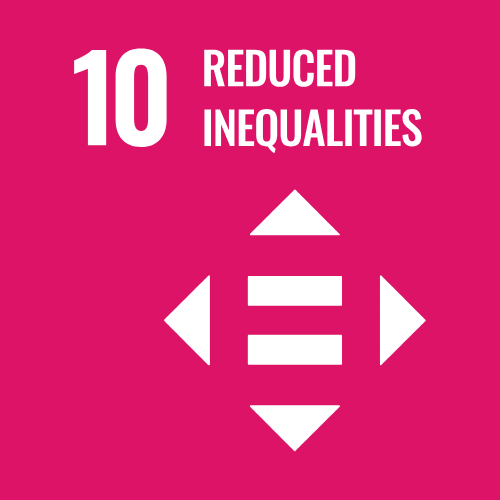

By 2030, every US baby boomer will be over 65. One in five Americans will be of retirement age. 2030 is also the SDG finish line.
"The Age of Longevity" asks how health, work, housing and pensions must change so the extra years are healthy, productive and dignified.
By 2034, Americans aged 65 and over will outnumber children for the first time in US history: 77.0 million to 76.5 million.
Health care, work, housing and retirement were designed for a country that no longer exists.
One in two people worldwide hold ageist attitudes, says the WHO. It costs older people health, income and years of life.
Health, jobs, housing and social protection still assume a short retirement.
By the late 2070s, people aged 65 and over are projected to reach 2.2 billion and outnumber children under 18.


SDG 3: healthy lives and well-being at every age.
SDG 10, target 10.2: inclusion of all, irrespective of age.
15 states and one territory have joined the AARP Network of Age-Friendly States and Communities, committing to plan for every age.
In Maine alone, 98 communities have signed on, from Fort Kent to Saco.
The WHO Global Network for Age-friendly Cities and Communities gives local leaders a shared playbook.
Ask your city or town to join the age-friendly network. At work, hire and keep talent over 50, and pair generations as mentors.
Push your governor and legislature for a state plan on ageing that covers health, housing, transport and work.
Call your members of Congress: fund the Older Americans Act and enforce the Age Discrimination in Employment Act.
If the next 30 years of life are a gift, who are we designing for, and who is still missing from the table?
UN DESA, International Day of Older Persons 2026: "The Age of Longevity: Rethinking Systems for Longer Lives."
US Census Bureau, Demographic Turning Points for the United States: Population Projections for 2020 to 2060 (P25-1144).
UN DESA, World Population Prospects 2024: Key Messages.
World Health Organization, Global Report on Ageism (2021).
AARP Livable Communities, Network of Age-Friendly States and Communities.
UN General Assembly resolution 45/106 (1990), designating October 1 as the International Day of Older Persons.
The content of this publication has not been approved by the United Nations and does not reflect the views of the United Nations or its officials or Member States. un.org/sustainabledevelopment